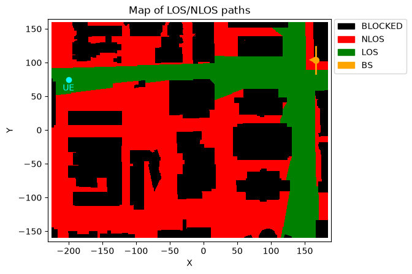
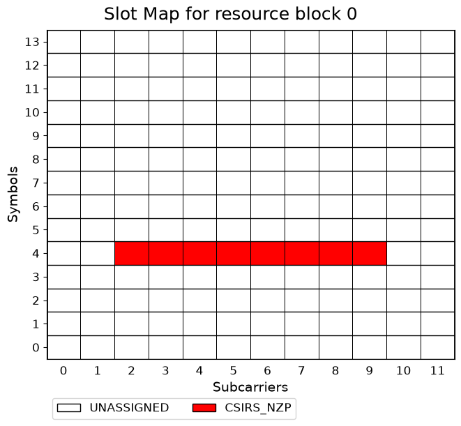
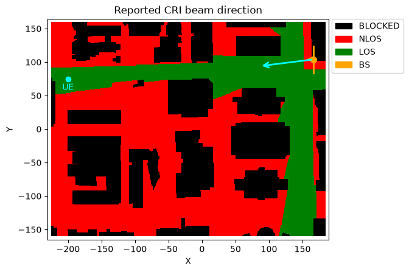

Beam Sweeping in a DeepMIMO Scenario
This notebook demonstrates beam sweeping in a DeepMIMO scenario by transmitting a set of CSI-RS resources and using the corresponding CRI reports.
[1]:
import numpy as np
from neoradium import DeepMimoData, BandwidthPart, AntennaPanel
from neoradium import CsiRs, CsiRsSet, CsiRsConfig, CsiReport, CsiReportMan
from neoradium.utils import toDb
[2]:
# Replace this with the folder on your computer where you store DeepMIMO scenarios
dataFolder = "/data/RayTracing/DeepMIMO/Scenarios/V4/"
DeepMimoData.setScenariosPath(dataFolder)
# Create a DeepMimoData object
dmData = DeepMimoData("asu_campus_3p5")
dmData.print()
DeepMimoData Properties:
Scenario: asu_campus_3p5
Version: 4.0.0a3
UE Grid: rx_grid
Grid Size: 411 x 321
Base Station: BS (at [166. 104. 22.])
Total Grid Points: 131,931
UE Spacing: [1. 1.]
UE bounds (xyMin, xyMax) [-225.55 -160.17], [184.45 159.83]
UE Height: 1.50
Carrier Frequency: 3.5 GHz
Num. paths (Min, Avg, Max): 0, 6.21, 10
Num. total blockage: 46,774
LOS percentage: 19.71%
In the following cell, we select an arbitrary UE position and use the channelForPoints method of the DeepMimoData class to obtain a channel model between the base station and the UE.
[3]:
# Create a bandwidth part
bwp = BandwidthPart(numRbs=24, spacing=30)
# Select a UE position
uePosition = [-200,75] # Try other points such as [120,60] or [125,125]
# Create a channel model between the base station and the specified UE
bearingAngle = 180
channel = dmData.channelForPoints(uePosition, bwp,
txAntenna = AntennaPanel([1,4], polarization='x'),# 8 TX antennas
txOrientation = [bearingAngle,0,0],
rxAntenna = AntennaPanel([1,1], polarization='x', # 2 RX antennas
beamWidth=[65,360]), # Omnidirectional
normalizeGains=False) # Do not normalize gains
# channel.print() # Uncomment to print the channel information
# Draw the map to show the base station and the UE
ax = dmData.drawMap("LOS-NLOS") # Draw the scenario map
dmData.drawBsPanel(ax, bearingAngle) # Draw the base station antenna panel
ax.scatter(x=[uePosition[0]], y=[uePosition[1]], c="cyan") # Draw the UE position
ax.annotate("UE", uePosition, textcoords="offset points", # Annotate the UE position
xytext=(0,-13), ha='center', color="cyan");

[4]:
# Create a beam-sweeping CSI-RS configuration
# For this beam-sweeping experiment, we use:
# - 8 beams for sweeping
# - 8 CSI-RS objects with resource IDs 1 to 8
# - CSI-RS resources at symbol 4 and resource elements 2 to 9
# - One NZP CSI-RS resource set containing all 8 sweeping resources
numSweep = 8
sweepResources = []
for i in range(numSweep):
sweepResources += [ CsiRs(resourceId=i+1, numPorts=1, symbols=[4],
freqMap="".join([str(int(x)) for x in np.eye(12)[i+2]])[::-1]) ] # REs 2 to 9
sweepSet = CsiRsSet("NZP", bwp, resourceType="periodic", rsId=1, period=20*(bwp.u+1), csiRsList=sweepResources)
sweepConfig = CsiRsConfig([sweepSet])
# sweepConfig.print() # Uncomment to print the CSI-RS configuration
# Create a CSI report object for CRI reporting
sweepReport = CsiReport(sweepSet, reportId=sweepSet.rsId+10, quantity="Cri")
# Create a CSI report manager (upDelay=0 means no uplink delay and the report becomes available immediately)
sweepReportMan = CsiReportMan([sweepReport], upDelay=0)
sweepReportMan.print()
CSI Report Manager Properties:
upDelay: 0
Num Reports: 1
CSI Report 11:
reportId: 11
reportType: periodic
period: 5
offset: 0
quantity: Cri
[5]:
# Get the channel matrix between the base station and the UE from the channel model
channelMatrix = channel.getChannelMatrix()
csiRsResources = sweepConfig.getResources() # Get CSI-RS resource information
setResources = csiRsResources[ sweepSet.rsId ] # Get the resources for beam sweeping (by ID)
sweepWs, sweepBeams = channel.txAntenna.getSweepingBeams(1, numSweep) # Get beam angles and precoders from TX panel
print("Beam information:")
print(" Beam Theta Phi Pol")
print(" ---- ----- ----- ---")
for i in range(numSweep):
print(f" {i} {np.round(sweepBeams[0][i],1):5.1f} {np.round(sweepBeams[1][i],1):5.1f} {sweepBeams[2][i]}")
# Create a transmitted resource grid and precode the CSI-RS resources using the
# precoders obtained above. Then set the corresponding resource elements in
# txGrid to the precoded CSI-RS values.
txGrid = bwp.createGrid(channel.txAntenna.numEl)
for resourceId, (lIdx, kIdx, sweepReValues) in setResources.items():
b = resourceId-1 # Beam index (= resource ID - 1)
w = sweepWs[:,b:b+1] # nt x 1 # Precoding vector for this beam
txGrid[:,lIdx, kIdx] = (w @ sweepReValues, "CSIRS_NZP", resourceId) # Precode the resources in txGrid
txGrid.drawMap() # Draw a map of txGrid for the first TX antenna port
gridStats = txGrid.getStats() # Get statistics. This shows the number of REs in the
print("\nResource elements in 'txGrid':") # full resource grid allocated to each CSI-RS
for k,v in gridStats.items():
print(f" {k+":":15s} {v}")
# Pass txGrid through the channel and add noise
rxGrid = txGrid.applyChannel(channelMatrix) # Apply the channel to the precoded resources (frequency domain)
noisyRxGrid = rxGrid.addNoise(snrDb=10, useRxPower=True) # Add noise
# Process CSI-RS at UE:
sweepReportMan.processRxGrid(noisyRxGrid, csiRsResources) # Process the CSI-RS and prepare the feedback
# For this example we assume the feedback is available immediately
csiReportInfo = sweepReportMan.getFeedback() # Get all available CSI reports from CsiReport objects
csiFeedback = csiReportInfo[ sweepReport.reportId ] # Get the CSI feedback for the beam sweeping (by ID)
cri = csiFeedback.cri.cri
print(f"\nCRI Info:")
print(f" CRI: {cri}")
print(f" Best beam index: {cri-1}")
print(f" Best beam: 𝛳={sweepBeams[0][cri-1]:.2f}°, 𝝋={sweepBeams[1][cri-1]:.2f}°")
print(f" RSRP: {csiFeedback.cri.rsrp:.2f} dB")
Beam information:
Beam Theta Phi Pol
---- ----- ----- ---
0 90.0 -60.0 x
1 90.0 -38.2 x
2 90.0 -21.8 x
3 90.0 -7.1 x
4 90.0 7.1 x
5 90.0 21.8 x
6 90.0 38.2 x
7 90.0 60.0 x
Resource elements in 'txGrid':
GridSize: 32256
UNASSIGNED: 30720
CSIRS_NZP(1): 192
CSIRS_NZP(2): 192
CSIRS_NZP(3): 192
CSIRS_NZP(4): 192
CSIRS_NZP(5): 192
CSIRS_NZP(6): 192
CSIRS_NZP(7): 192
CSIRS_NZP(8): 192
CRI Info:
CRI: 5
Best beam index: 4
Best beam: 𝛳=90.00°, 𝝋=7.11°
RSRP: -60.84 dB

[6]:
# Draw the map again, this time with an arrow showing the direction of the CRI beam
beamAngle = sweepBeams[1][cri-1] # Angle of the reported CRI beam
ax = dmData.drawMap("LOS-NLOS") # Draw the scenario map
dmData.drawBsPanel(ax, bearingAngle) # Draw the base station antenna panel
theta, phi = AntennaPanel.local2Global(sweepBeams[0][cri-1], sweepBeams[1][cri-1], channel.txOrientation)
dmData.drawBeamArrow(ax, phi, color="cyan") # Draw the CRI beam arrow
ax.scatter(x=[uePosition[0]], y=[uePosition[1]], c="cyan") # Draw the UE position
ax.annotate("UE", uePosition, textcoords="offset points", # Annotate the UE position
xytext=(0,-13), ha='center', color="cyan")
ax.set_title("Reported CRI beam direction"); # Set the map title

[ ]:
[ ]: